Se trata de una api especializada en la interacción con bases de datos, de hecho "MongoDB" trabaja con esta api, su funcionamiento es mililar al de "localStorage" o "sessionStorage", ya que permite almacenar datos en el navegador, pero con grandes particularidades que la diferencian.
-
Esta api esta orientada a objetos, a su vez los datos de esta se basan en cadenas de "nombre/valor"
-
Es asincrona por lo que se puede acceder y manipular los datos sin la necesidad de recargar la paguina
-
Esta api trabaja con los eventos del "DOM", por lo que los resultados o respuestas estaran basados en estos eventos
Proceso de Creación
La primera acción a tomar para trabajar con esta api es alaborar una solicitud de creación de la base de datos, para esto existen cierta pauta, la cual consiste en que la constante donde se almacene esta solicitud debe llamarse "IDBRequest", esto ya que es el nombre designado para indicar que se trata de una base de datos "IndexedDB", por su puesto que es posible nombrar esta variable de cualquier otra forma, sin embargo se recomienda aplicar este nombre ya que se considera como buenas pracitcas.
Teniendo en cuenta este especto y accediendo al objeto "indexedDB" se utiliza el metodo ".open()", el cual permite aperturar (en caso de que exsista) o crear (en caso de que no exista) una base de datos, este meodo recibe dos datos para trabajar, el primero corresponde al nombre de la base de datos, minetras que el segundo define la verción de la base de datos.
Ejemplo
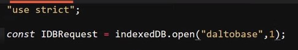
Nota: El definir la verción de la base de datos como "1" tan solo es con el proposito del ejemplo de la petición, este aspecto se desenglosara más ademlante.
Nota: Si la constante se nombra de la misma forma que "indexedDB" es necesario realizar la solicitud como "window.indexedDB" ya que de lo contrario javaScrip no ubica al objeto, en su lugar lo interpreta como un llamado a dicha constante :
Una vez realizado la solicitud para la base de datos con el metodo ".open( )" se procede a inicializar una serie escuchas de eventos, esto ya que algunos de estos se utilizan para definir que acción realizar en base a cual sea el resultado de la solicitud del metodo ".open", estos eventos son:
-
Success: Este evento determina si todo salio correctamente en la solicitud ".open( )"
Ejemplo
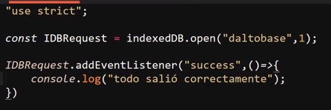
-
Error: Este evento se dispara en caso de que surja algun error al aceder a la base de datos
Ejemplo
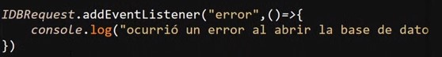
-
Upgradeneeded: Se trata de un evento que se dispara en caso de que la base de datos no ha sido creada, por lo tanto se trata de una comprovación para evaliar la existencia de la base de datos
Ejemplo
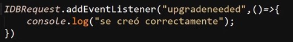
EL siguiente se trata de un ejemplo de como se ejecutan los eventos "Success" y "Upgradeneeded" al crear u conectar con la base de datos usando el metodo ".open( )"
Ejemplo
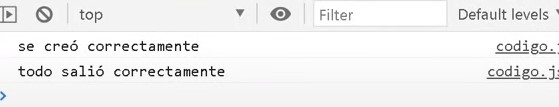
Crear Almacen de Objetos
Un almacen de objetos es una arquietectura de almacenamiento de datos que se caracteriza por almacenar los datos como objetos a diferencia de otras metodologías, de esta forma es en la que trabaja la api "IndexedDB", "mongoDB" y otras bases de datos no relacionales, por lo tanto un almacen de objetos seria lo que es una tabla para una base de datos realacional.
Un aspecto sumamente importante de los almacenes de objetos es que estos solo pueden ser creados en el momento en que se crea la base de datos, razon por la cual la declaración de estos se debe realizar desde el evento "Upgradeneeded", ya que el codigo definido dentro de este evento se ejecutara en caso de que la base de datos no exista.
Para crear un almacen de objetos es necesario acceder a la base de datos, esto se hace acediendo al metodo ".result" de la solicitud, esto ya que en la constante "IDBRequest" (o cualquiera que sea como se nombre) no se almacena la base de datos en si, si no se almacena la solicitud hacia esta, en su lugar la la base de datos se obtiene como un resultado de esta solicitud, razon por la cual se utiliza el metodo ".result" para obtenerla.
Ejemplo
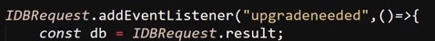
De esta forma se obtiene el acceso a la base de datos a la vez que se guardadentro de la variable "db", para crear el almacen de objetos en si, se utiliza la propiedad "createObjetStore( )" propiedad la cual recibe dos datos para funcionar, el primero corresponde al nombre del dato a almacenar mientras el segundo corresponde al "key" (identificador) que se aplicara a los objetos almacenados.
Ejemplo
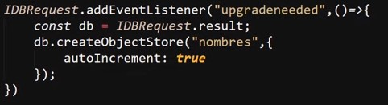
En este caso (y en la mayoria) en el dato "key" del almacen de objetos se define "autoIncrement: true", esto siginifica que por cada objeto que se almacene el idice se incrementara, de esa forma no habra dos elemetos con el mismo identificador.
Nota: Una alternativa a "autoIncrement" es "Keypath", el cual es una opción con la misma función y con casi con el mismo funcionamieto, salvo por pequeñas diferencias en si aplicación, si se desea indagar sobre "Keypath" se recomienda buscar en google, ya que las diferencias son tan poccas que no se aborda este elemento en el curso.
Resultado
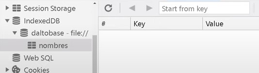
En este ejemplo se puede apreciar el como se usa las herramientas de desarrollador para observar el almacen de objetos recien generado por el codigo anterior, esto se hace desde la pestaña de "aplication", en la sección de "indexedDB".
Nota: es necesario hacer click derecho sobre la opción "indexedDB" para que esta herramienta se actualise y se muestre la base de datos.
Almacenar objetos
Lo primero a realizar para guardar un objeto en el almacen de datos es sin duda el crear el objeto en cuestión, para esto se utiliza las transacciones, las cuales son operaciones que se realizan en los almacenes de objetos (tablas), estas operaciones pueden ser añadir, modificar, eliminar, cualquier acción o operación se considera una transacción.
Ejemplo
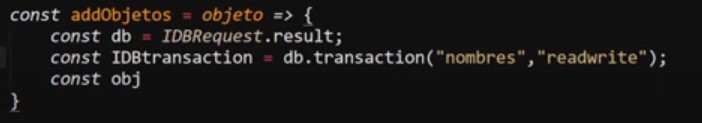
En este ejmplo se puede apreciar como se crea una función para acceder a la base de datos al obtenerla desde el resultado de la solicitud realizada en la variable "db", luego se usa el metodo ".transaction" para aperturar una transacción en la base de datos, para esto es necesario añadir dos valores a la transacción, el primero corresponde al nombre del almacen de objetos (tabla) en la que se realizara, mientras que el segundo dato se trata del tipo de transacción a realizar, en este dato existen dos valores posibles:
-
ReadWrite: Este tipo de transacción permite modificar los objetos almacenados en el almacen, ya sea editar, añadir o elominar objetos de este
-
Readonly: Este tipo de transacción unicamente permite leer los objetos del almacen
finalmente para concluir con la apertura de la transacción se autoriza la ejecución de la transacción en el lugar indicado, esto se realiza con el metodo "objetStore", metodo al cual se le definie nuevamente el nombre de la tabla en la que se realizara la acción, de la siguite forma.
Ejemplo
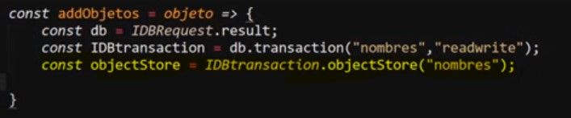
De este forma la transacción finalmente se encuetra aperturada, y lista para ser declarada la acción a ejecutar, para añadir el objeto al almacen de objetos se utiliza el metodo ".add", metodo al que se le pasa el objeto en cuestión.
Ejemplo
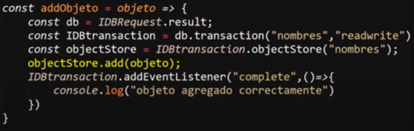
De este modo la apertura de la transacción y el almacenaje del objeto se encuetran completos, este ejemplo se puede definir como:
-
La variable "db" obtiene la base de datos
-
La variable "IDBtransaction" apertura la transacción y define el almacen de objetos así como el tipo de transacción (readonly, readWrite)
-
La variable "objectStore" autoriza la acción en el lugar definido
-
Se usal el metodo ".add" en "objectStore" para añadir el elemeto a almcenar
Finalmente en este ejemplo se inicializa un ecucha de eventos para aplicar un mensaje en consola en caso de que la transacción se complete.
Resultado
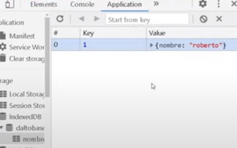
Leer Objetos
Para toda interacción con la base de datos es necesario el aperturar una transacción, eso no excluye a las lectura de los elementos almacenados, por lo tanto la apertura de la transacción se realiza de la misma forma, con la unica diferencia de que el tipo de transacción se define como "readonly":
Ejemplo
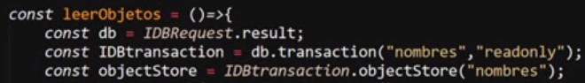
Una vez la transacción ya se encuentra aperturada se utiliza el metodo ".openCursor()", el cual permite leer los datos almacenados en la base de datos, este metodo posse la particularidad de retornar una transacción, por lo cual tambien es necesario utilizar el metodo ".result" sobre este, ya que este ultimo metodo trabaja con generadores este retorna la función que lo ejecuta (literamente retorna el codigo de la función), Finalmente a este ultimo se aplica el metodo ".value" para finalmente acceder a los objetos almacenados en la base de datos.
Por lo tanto para acceder a los datos de la base de datos utilizando el metodo ".openCursor" se applica los metodos ".result" y ".value" a este, como de la siguite forma:
Ejemplo
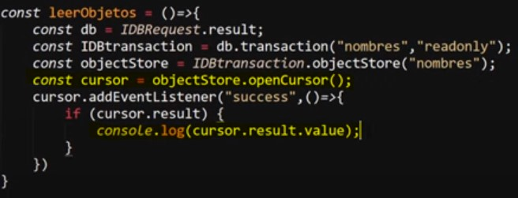
En este ejemplo se utiliza el metodo ".openCursor()" para leer los elementos, se inicializa un escucha de eventos de tipo "success", para determinar si todo ocuarrio correctamente, de ser asi se usa un condicional "if" para validar que el metodo ".result" exista, de ser así imprime un valor de la base de datos en consola.
Nota: por defecto de esta forma se accede unicamente al primer dato, si se desea acceder a todos los datos del almacen de objetos se aplica el metodo ".continue()" al metodo ".result":
Ejemplo
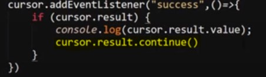
Una particularidad del metodo ".openCursor" radica en que este metodo siempre se ejecutara al menos una vez de forma nula, esto ya que al llegar al ultimo indice del almacen de objetos este se encuetra bacio, ya que es el espacio designado para el proximo dato a ingresar, por lo tanto el este indice no contener aún un dato se vuelve nulo.
De ese modo se puede aprovechar esta caracteritica para ejecutar un codigo en particular cuado el metodo llegue a esta "ejecución nula", como en el siguite ejemplo, en el cual cuado se vuelve nulo se envia un mensaje por consola.
Modificar Elementos
Para esto se utiliza el metodo ".put()" el cual permite modificar un objeto existente en el almacen de objetos, a la vez que en caso de que este objeto no exista lo añade, el funcionamiento de este metodo es enormemente similar al de ".add".
Pese a su similitud el metodo ".put()" se diferencia del ".add()" en que este recibe no uno si no dos valores, los cuales corresponden al objeto y su key.
Ejemplo
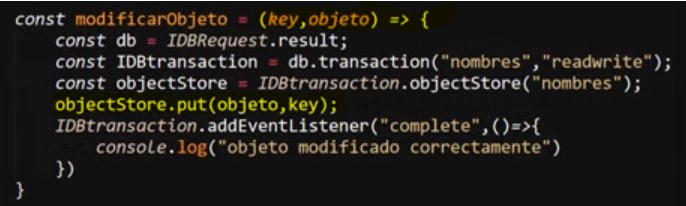
Modificación
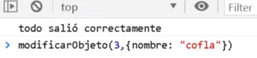
Resultado
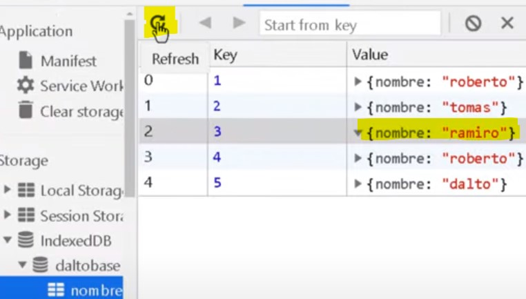
De este simple modo se puede modificar los objetos almacenados en una base de datos, y si se da el caso de que el obejeto no exista este sera añadido.
Nota: recordar que para visualizar los cambios de la base de datos es necesario refrescar la herramienta de desarrollador tal como se resalta en el resultado del ejemplo.
Eliminar Elementos
Para esta ultima acción se utiliza el metodo ".delete", el cual se aplica igual que los metodos anteriores, con la diferencia de que este requiere que se indique el "key"(identificador) del objeto que sera eliminado.
Ejemplo
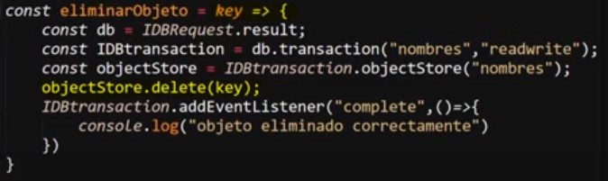
MatchMedia
Esta api permite trabajar con responsive dising, lo más recomendable al utilizar esta api es limitar su implementación para aquellos casos en los que las necesidades del diseño no puedan ser solventadas co CSS.